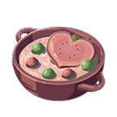

Creamy Heart Soup

A Restorative and Soup for a Summer Evening
This fresh and vibrant soup sure is greater than the sum of it's parts. At first glance the ingredients may seem a bit disparate but suspend your disbelief because when you combine the fresh summer harvest fruits with cow's milk straight from the teet the experience is truly transcendental. Equal parts gazpacho and chowder this beloved soup, it is said that sharing a bowl of this soup can bring even two strangers closer together.
Ingredients
- 2 Large Hearty Radishes
- 1 15oz. Hydromelon
- 1 medium Voltfruit
- 1 cup Whole Milk
Preparation
- Combine hearty radishes, hydromelon, and voltfruit in a blender or, if using a hand blender, in a deep bowl. (If necessary, work in batches.) Blend at high speed until very smooth, at least 2 minutes, pausing occasionally to scrape down the sides with a rubber spatula.
- Slowly drizzle in the milk. The mixture will turn bright orange or dark pink and become smooth and emulsified, like a salad dressing. If it still seems too thick, drizzle in more milk until texture is creamy.
- Strain the mixture through a strainer or a food mill, pushing all the liquid through with a spatula or the back of a ladle. Discard the solids. Transfer to a large pitcher (preferably glass) and chill until very cold, at least 6 hours or overnight.